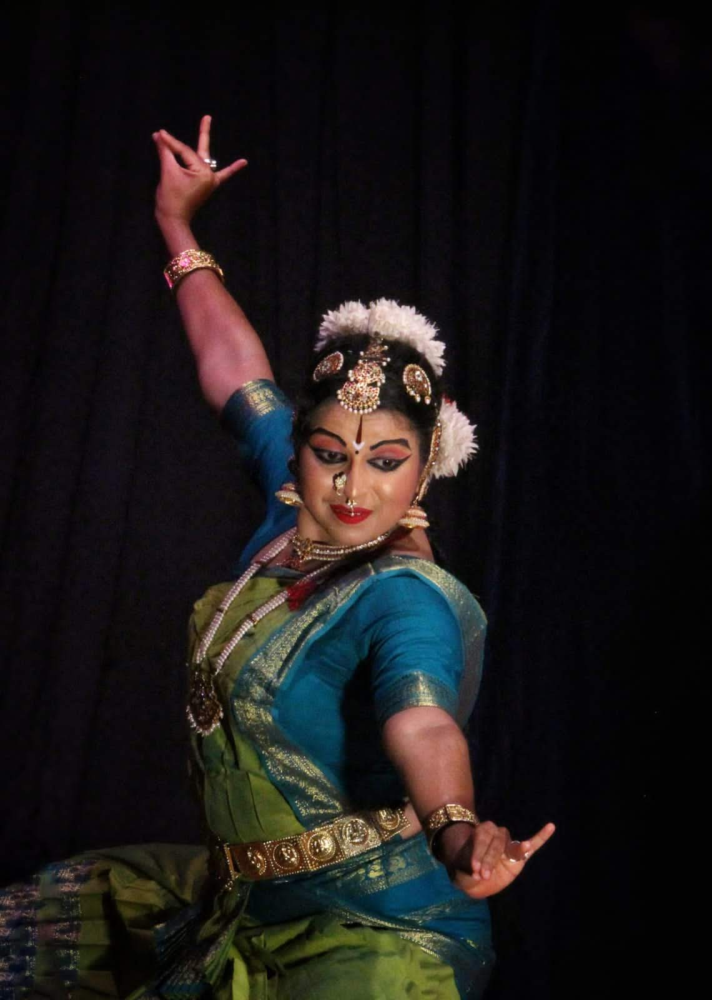
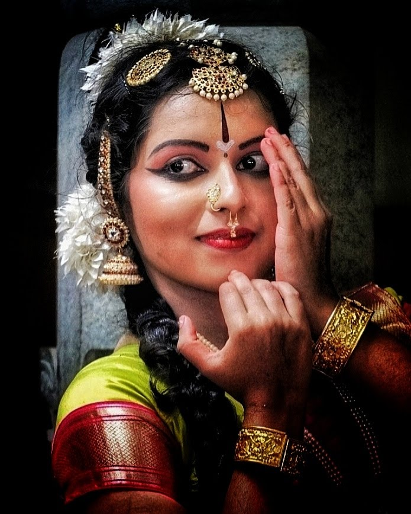
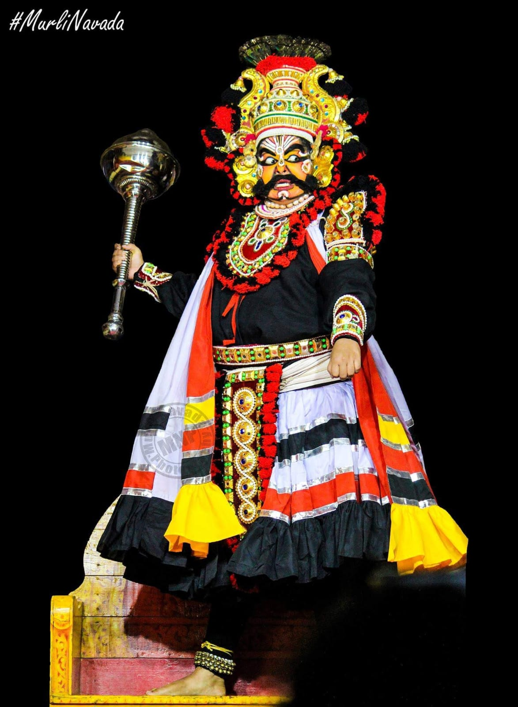
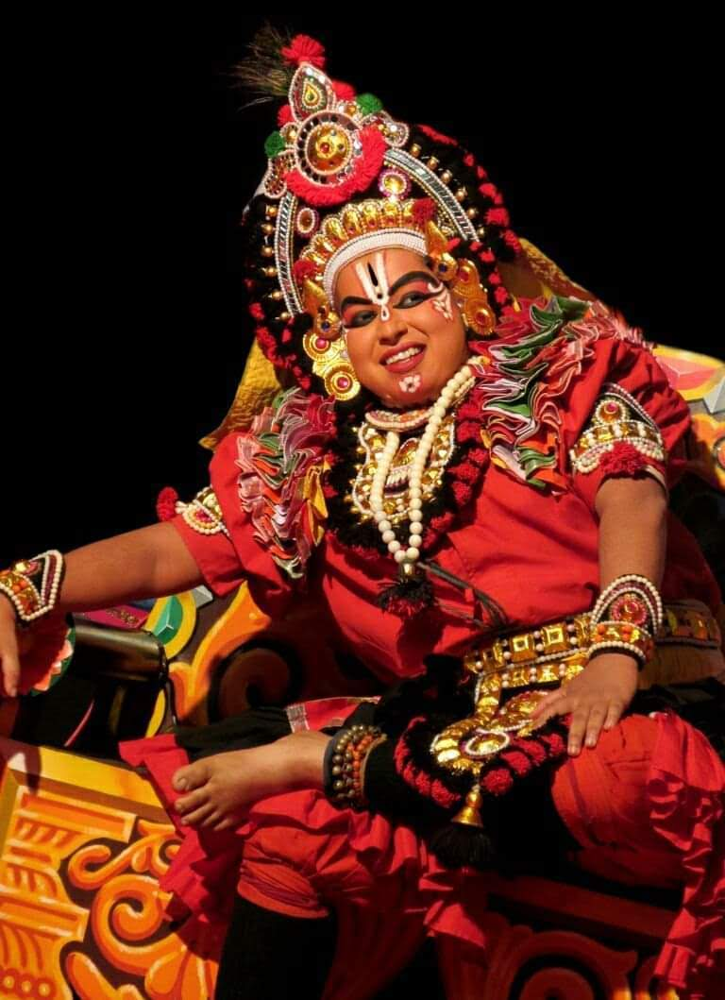
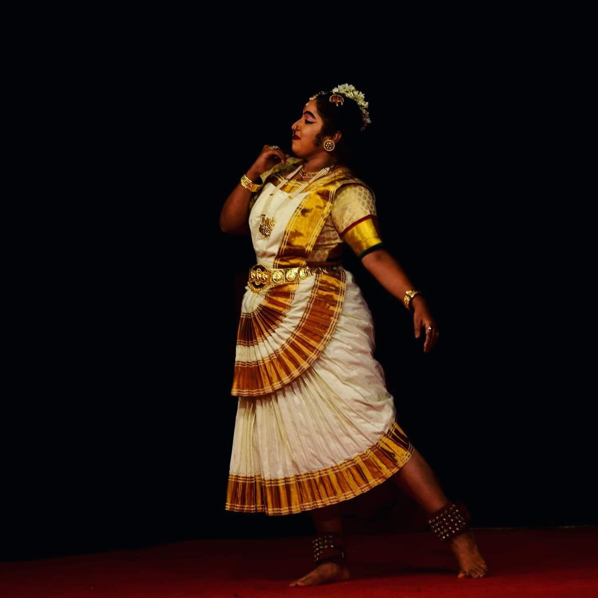
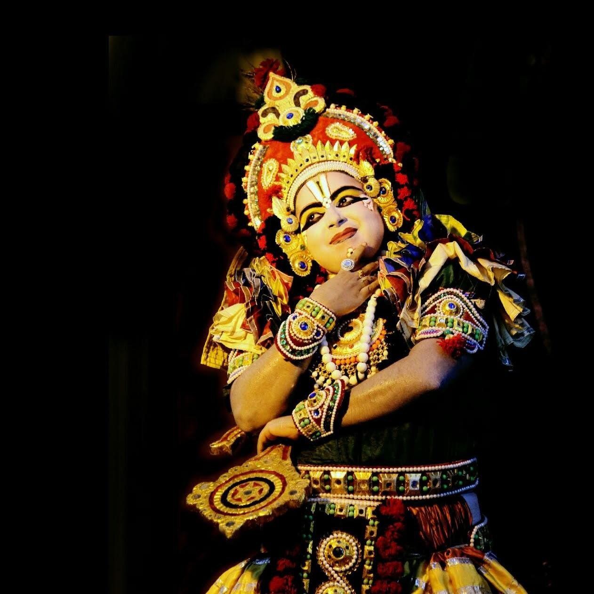
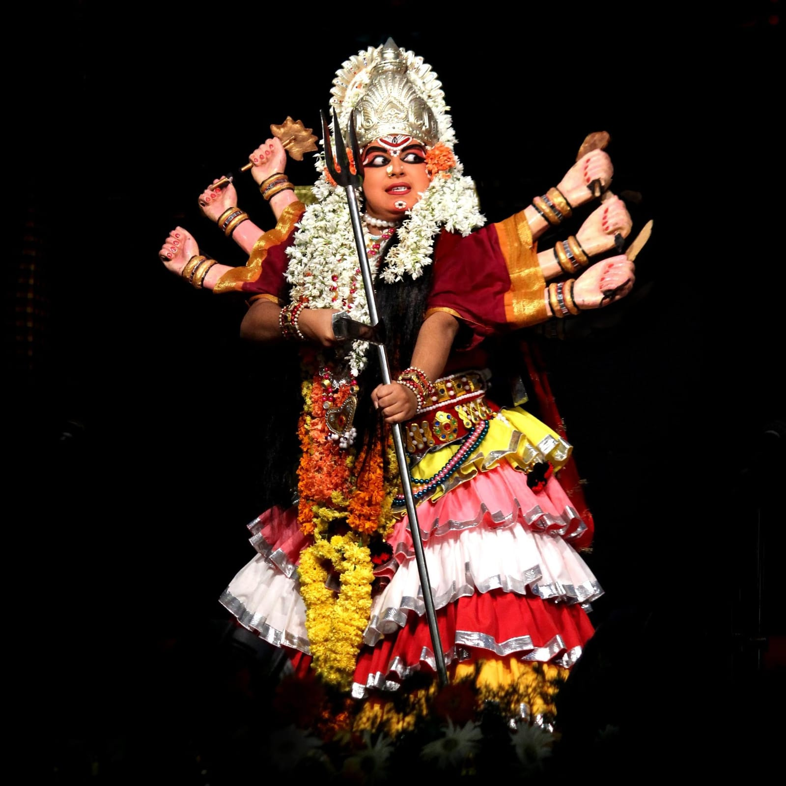
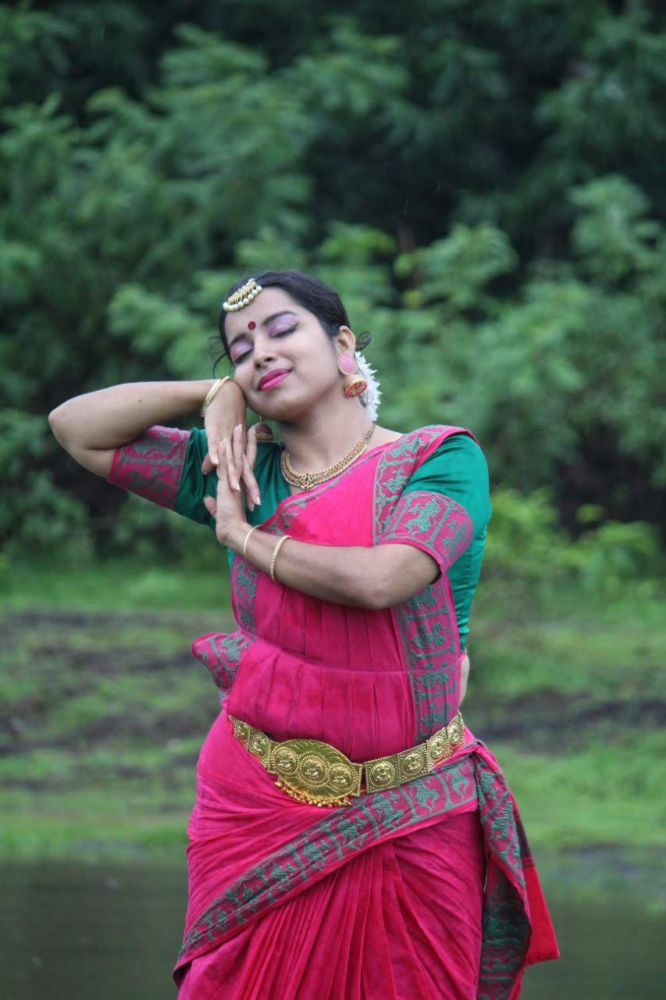
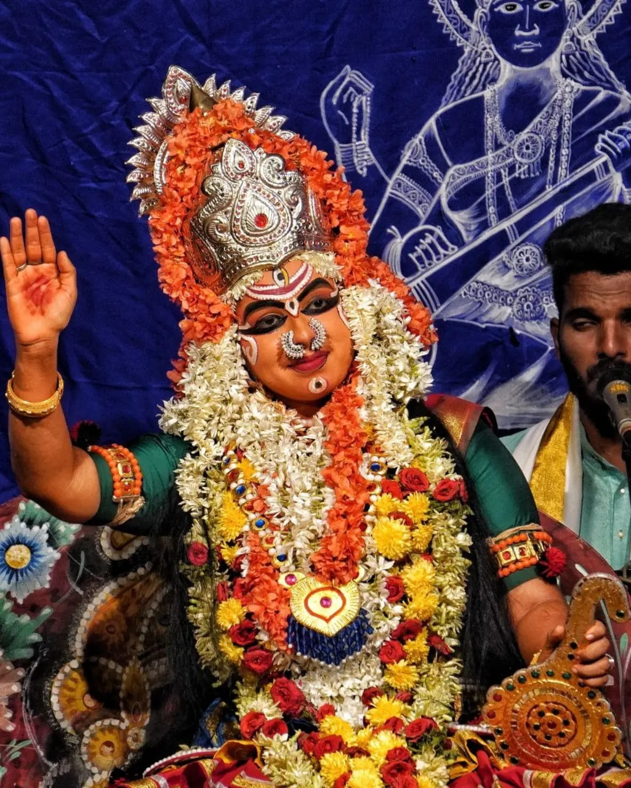
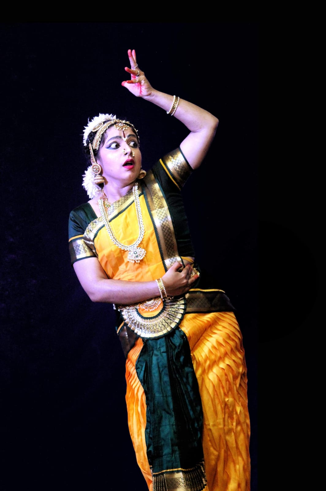

01
Classical dance
Bharatanatyam
Rhythm, geometry, and rasa. Traditional nritta meets the emotional intelligence of nritya.
Train with me ↗Artist · Educator
I am a Bharatanatyam Vidushi and Mahila Yakshagana artist carrying living stories forward - on stage, in the classroom, and one student at a time.

A dual practice
My work lives between two disciplines that reward curiosity: the exacting grammar of computer science and the expressive, improvisational world of South Indian performance.
Start a conversation ↗The practice
Rooted in Karnataka.
Open to the world.

Classical dance
Rhythm, geometry, and rasa. Traditional nritta meets the emotional intelligence of nritya.
Train with me ↗
Coastal dance-drama
Bold characters, vivid mukhavarnike, and stories that speak in the language of the coast.
See the repertoire ↓On stage
Dance.
Yakshagana.







The classroom
I teach Bharatanatyam and Yakshagana through private instruction and thoughtful workshops for students who want to go deeper - into movement, meaning, or the systems behind both.
Selected reels
 ▶
▶ ▶
▶ ▶
▶ ▶
▶ ▶
▶ ▶
▶ ▶
▶ ▶
▶The next chapter
For performances, collaborations, workshops, or private lessons, send me a note and I will be in touch.